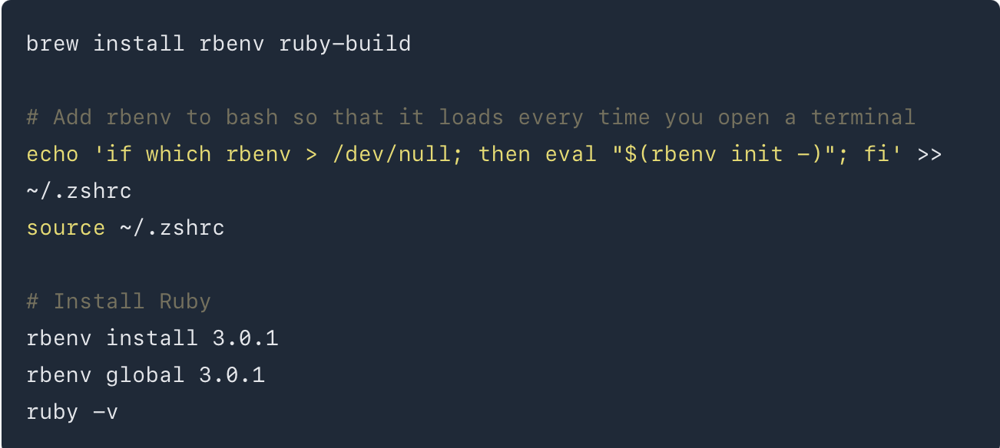
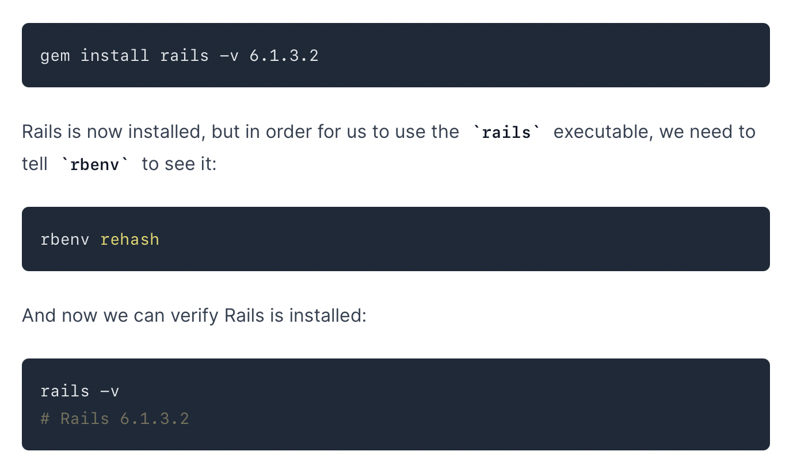
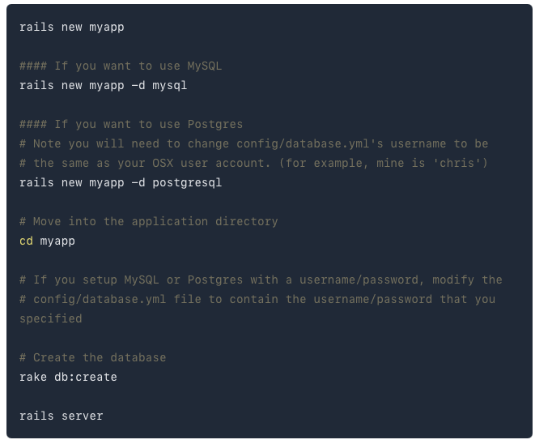
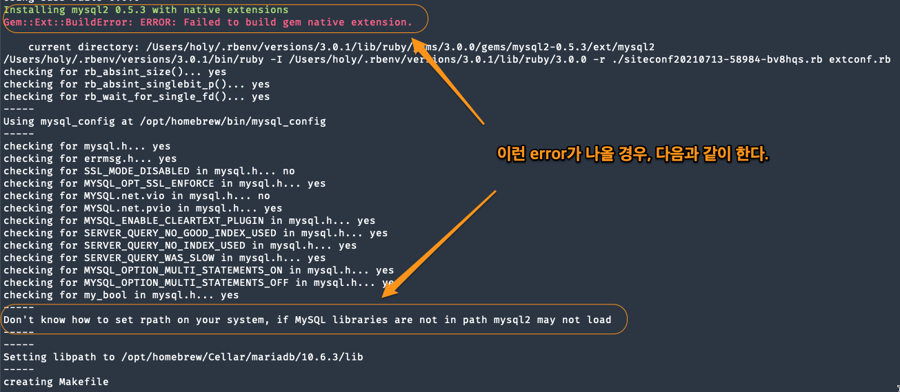
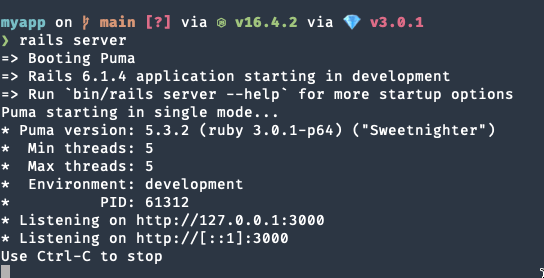

Local Rails Settings
Table of Contents
1 Local Rails Settings
goRails에 나온 설명을 바탕으로 setting을 진행한다.
1.1 ruby (3.0.1) 설치
- chsh -s /bin/zsh : zshell로 change
- brew 설치.
- rbenv로 ruby(3.0.1) 설치
ruby를 설치할 때, rbenv로 version에 맞는 ruby를 설치할 수 있다. 그래서 rbenv를 먼저 설치한다. 설치 과정은 다음과 같다.
 각각의 내용은 이해가 안갈 수 있다. 하지만, 이렇게 해서 rbenv를 설치한다고 이해하면 될듯 하다.
1.2 rails(6.1.3.2) 설치
- ruby를 설치했기 때문에 gem을 사용할 수 있다.

Figure 1: rails install
1.3 Database(mariadb) 설정
uninstall mariadb -> mariadb를 처음 설치하면, postamble이 설치되지 않는 문제가 있다. 이것을 해결하기 위해선 기존의 mysql을 깨끗하게 삭제한 후에 다시 mysql을 설치하면 된다. 자세한 내용은 다음을 참조하자.
Warning: The post-install step did not complete successfully You can try again using: brew postinstall mariadb
위의 지시대로 하면 삭제한 후에 다시 mariadb를 설치하는 것이다. 이렇게 해서 안되는 경우도 있다. 그럴때는 다음과 같이 해서 해결하긴 했다. 그런데 이것이 solution은 아닌 거 같다.
brew cleanup sudo touch /etc/my.cnf
또다른 해결책
Mac air m1의 경우, brew의 저장위치가 opt/homebrew에 되어 있다. /opt/homebrew/etc/my.cnf에 보면 mysqlx-bind-address=127.0.0.1이라는 항목이 있다. 이 항목을 주석처리한후 다시 uninstall한후 설치했다. uninstall해도 /opt/homebrew/etc/my.cnf가 그대로 있는 것으로 보아서 mysqlx-bind-address가 영향을 미쳤다고 생각한다.
1.4 Nokogiri, pg install을 위한 처리
sudo installer -pkg /Library/Developer/CommandLineTools/Packages/macOSSDKheadersformacOS10.14.pkg -target /
이건 제대로 되지 않는다.
1.5 rails로 app을 만들어 보자.

Figure 2: rails app
순서대로 하면, 다음과 같다.
rails new myapp -d mysql
여기서 에러가 난다.

Figure 3: rails app error
solution
참조사이트가 있다. 나는 다음과 같이 수정했다.
bundle config build.mysql2 –with-mysql-config=/opt/homebrew/Cellar/mariadb/10.6.3/bin/mysqlconfig cd ->myapp bundle 그냥 다시 myapp을 지우고, 다시 설치한다. rails new myapp -d mysql
macbook air m1은 –with-mysql-config의 위치가 다르다. brew의 위치가 option/homebrew에 있기 때문이다. 에러없이 설치됨을 알수 있다.
1.6 rake db:create
별다른 문제없이 m1에선 되지만, intel pc에선 잘 안된다. Access Denied문제가 발생할 수 있다.
Access denied for user 'root'@'localhost' If you received an error that said Access denied for user 'root'@'localhost' (using password: NO) then you need to update your config/database.yml file to match the database username and password.
=> 해결책 sudo mysql -u root -p로 접속 password: systempw(1234) SET PASSWORD FOR 'root'@'localhost' = PASSWORD('root1234’);
and in databse.yml development: adapter: mysql2 database: mydb host: localhost username: root password: root1234
=> development가 default를 참조하기 때문에 default에 생성하면 된다.
rails server 실행해보자.

Figure 4: rails server 실행
=> 127.0.0.1을 실행하면 웹페이지를 볼 수 있다.